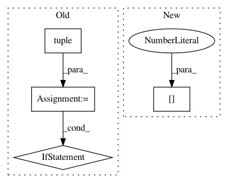

cfbaec60c77448e6249f912d4b4d4a8c079f2bcf,keras/engine/topology.py,Merge,get_output_shape_for,#Merge#Any#,1306
Before Change
shape1 = list(input_shapes[0])
shape2 = list(input_shapes[1])
dot_axes = [a - 1 for a in self.dot_axes]
tensordot_output = np.tensordot(np.zeros(tuple(shape1[1:])),
np.zeros(tuple(shape2[1:])),
axes=dot_axes)
if len(tensordot_output.shape) == 0:
shape = (1,)
else:
shape = tensordot_output.shape
return (shape1[0],) + shape
def compute_mask(self, inputs, mask=None):
if mask is None or all([m is None for m in mask]):
After Change
elif self.mode in ["dot", "cos"]:
shape1 = list(input_shapes[0])
shape2 = list(input_shapes[1])
shape1.pop(self.dot_axes[0])
shape2.pop(self.dot_axes[1])
shape2.pop(0)
output_shape = shape1 + shape2
In pattern: SUPERPATTERN
Frequency: 3
Non-data size: 4
Instances
Project Name: keras-team/keras
Commit Name: cfbaec60c77448e6249f912d4b4d4a8c079f2bcf
Time: 2016-07-16
Author: farizrahman4u@gmail.com
File Name: keras/engine/topology.py
Class Name: Merge
Method Name: get_output_shape_for
Project Name: keras-team/keras
Commit Name: 023331ec2a7b0086abfc81eca16c84a1692ee653
Time: 2017-02-09
Author: francois.chollet@gmail.com
File Name: keras/layers/convolutional.py
Class Name: Cropping3D
Method Name: __init__
Project Name: keras-team/keras
Commit Name: 023331ec2a7b0086abfc81eca16c84a1692ee653
Time: 2017-02-09
Author: francois.chollet@gmail.com
File Name: keras/layers/convolutional.py
Class Name: Cropping2D
Method Name: __init__